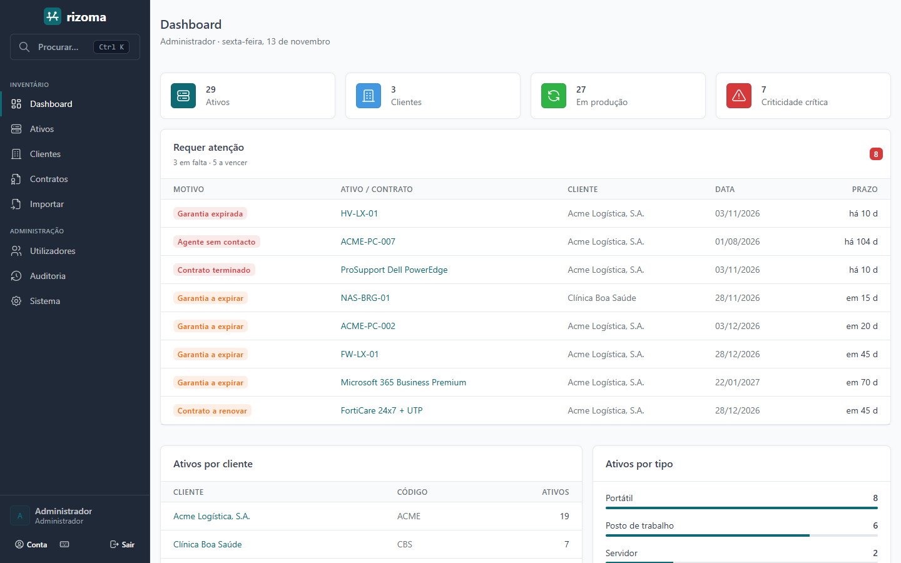

<title>Rizoma</title>
<meta name="claude:viewport-fit-sides" content="cover">
<meta name="description" content="Rizoma: CMDB multi-cliente para prestadores de serviços de TI. Inventário, relações, análise de impacto, contratos e renovações de todos os seus clientes.">
<link rel="icon" href="assets/rizoma-simbolo.svg" type="image/svg+xml">
<!-- Estrutura gráfica: Tabler 1.4.0 (MIT) — ver assets/TABLER-LICENSE -->
<link rel="stylesheet" href="assets/tabler.min.css">
<style>
  /* Layout: página de produto em faixas (claro · escuro · claro), conteúdo em container-xl do Tabler.
     O único momento de destaque é a faixa escura com uma cadeia de impacto real. */
  @font-face { font-family: "Inter"; font-weight: 400; font-display: swap; src: url("assets/fonts/inter-latin-400.woff2") format("woff2"); }
  @font-face { font-family: "Inter"; font-weight: 500; font-display: swap; src: url("assets/fonts/inter-latin-500.woff2") format("woff2"); }
  @font-face { font-family: "Inter"; font-weight: 600; font-display: swap; src: url("assets/fonts/inter-latin-600.woff2") format("woff2"); }
  @font-face { font-family: "Inter"; font-weight: 700; font-display: swap; src: url("assets/fonts/inter-latin-700.woff2") format("woff2"); }

  :root {
    --page-bg: #f9fafb;      /* fundo */
    --surface: #ffffff;      /* cartões */
    --ink: #1f2937;          /* texto */
    --muted: #6b7280;        /* texto secundário */
    --brand: #0f6b73;        /* verde-petróleo Rizoma */
    --brand-ink: #0f6b73;    /* marca como texto */
    --band: #1f2937;         /* faixa escura (igual nos dois temas) */
    --band-ink: #f3f4f6;
    --band-muted: #9ca3af;
    --line: #e5e7eb;
    --font-sans: Inter, -apple-system, BlinkMacSystemFont, "Segoe UI", Roboto, "Helvetica Neue", sans-serif;
    --tblr-primary: #0f6b73; --tblr-primary-rgb: 15, 107, 115; --tblr-primary-darken: #0c5960; --tblr-primary-fg: #fff;
    --tblr-primary-lt: rgba(15, 107, 115, .1);
    --tblr-link-color: var(--brand-ink); --tblr-link-color-rgb: 15, 107, 115;
    --tblr-font-sans-serif: var(--font-sans);
  }
  @media (prefers-color-scheme: dark) {
    :root:not([data-theme="light"]) {
      --page-bg: #111827; --surface: #1f2937; --ink: #e5e7eb; --muted: #9ca3af; --brand-ink: #5cc2c9;
      --band: #0b1220; --line: #2e3c51; color-scheme: dark;
    }
  }
  :root[data-theme="dark"] {
    --page-bg: #111827; --surface: #1f2937; --ink: #e5e7eb; --muted: #9ca3af; --brand-ink: #5cc2c9;
    --band: #0b1220; --line: #2e3c51; color-scheme: dark;
  }
  [data-bs-theme=dark] { --tblr-link-color: #5cc2c9; --tblr-link-color-rgb: 92, 194, 201; }

  body { background: var(--page-bg); color: var(--ink); font-family: var(--font-sans); }
  .container-xl { padding-left: max(16px, env(safe-area-inset-left, 0px)); padding-right: max(16px, env(safe-area-inset-right, 0px)); }
  h1, h2, h3 { text-wrap: balance; }
  .lead { max-width: 60ch; font-size: 1.125rem; line-height: 1.6; color: var(--muted); }
  .section { padding-block: 4.5rem; }
  .section-title { font-size: 1.75rem; line-height: 1.25; font-weight: 700; letter-spacing: -.015em; margin: 0 0 .75rem; }
  .eyebrow { font-size: .75rem; font-weight: 600; text-transform: uppercase; letter-spacing: .06em; color: var(--brand-ink); margin-bottom: .75rem; }

  /* cabeçalho */
  body::before { content: ""; position: fixed; inset: 0 0 auto; height: env(safe-area-inset-top, 0px); z-index: 10; background: var(--surface); }
  .site-header { position: sticky; top: env(safe-area-inset-top, 0px); z-index: 9; background: var(--surface); border-bottom: 1px solid var(--line); }
  .site-header .container-xl { display: flex; align-items: center; gap: 1.5rem; min-height: 4rem; }
  .site-header nav { display: flex; gap: 1.25rem; }
  .site-header nav a { color: var(--muted); text-decoration: none; font-weight: 500; }
  .site-header nav a:hover { color: var(--ink); }
  .logo-dark { display: none; }
  [data-bs-theme=dark] .logo-light { display: none; }
  [data-bs-theme=dark] .logo-dark { display: inline; }
  @media (max-width: 767px) { .site-header nav { display: none; } }

  /* hero */
  .hero { padding-block: 4rem 0; }
  .hero h1 { font-size: clamp(2.25rem, 5vw, 3.5rem); line-height: 1.05; font-weight: 700; letter-spacing: -.035em; margin: 0 0 1.25rem; max-width: 18ch; }
  .facts { display: flex; flex-wrap: wrap; gap: .5rem 1.5rem; margin-top: 1.75rem; color: var(--muted); }
  .facts span { display: inline-flex; align-items: center; gap: .4rem; }
  .facts .icon { color: var(--brand-ink); }
  .shot { display: block; width: 100%; height: auto; border-radius: var(--tblr-border-radius-lg, 8px); border: 1px solid var(--line);
    box-shadow: 0 24px 48px -24px rgba(17, 24, 39, .35); background: var(--surface); }
  .hero-shot { margin-top: 3rem; margin-bottom: -6rem; position: relative; z-index: 1; }

  /* faixa escura: cadeia de impacto */
  .band { background: var(--band); color: var(--band-ink); padding-block: 10rem 4.5rem; }
  .band .lead { color: var(--band-muted); }
  .band .eyebrow { color: #5cc2c9; }
  .chain { list-style: none; margin: 2rem 0 0; padding: 0; display: flex; flex-direction: column; gap: .5rem; }
  .chain li { display: grid; grid-template-columns: 2rem minmax(0, 1fr) auto; align-items: center; gap: .75rem;
    padding: .75rem 1rem; border: 1px solid rgba(255, 255, 255, .08); border-radius: 8px; background: rgba(255, 255, 255, .03); }
  .chain .lvl { font-variant-numeric: tabular-nums; color: var(--band-muted); font-size: .8125rem; text-align: center; }
  .chain .name { font-weight: 600; min-width: 0; }
  .chain .type { color: var(--band-muted); font-size: .8125rem; font-weight: 400; margin-left: .5rem; }
  .chain li.root { border-color: rgba(214, 57, 57, .55); background: rgba(214, 57, 57, .12); }
  .crit { font-size: .75rem; font-weight: 600; padding: .125rem .5rem; border-radius: 4px; white-space: nowrap; }
  .crit-critica { background: rgba(214, 57, 57, .2); color: #f8b4b4; }
  .crit-alta { background: rgba(247, 103, 7, .2); color: #fdba8c; }
  .rel { color: var(--band-muted); font-size: .8125rem; padding-left: 3.75rem; }

  /* funcionalidades */
  .feature .icon-box { width: 2.5rem; height: 2.5rem; border-radius: 8px; display: grid; place-items: center;
    background: var(--tblr-primary-lt); color: var(--brand-ink); margin-bottom: 1rem; }
  .feature h3 { font-size: 1.0625rem; font-weight: 600; margin: 0 0 .5rem; }
  .feature p { color: var(--muted); margin: 0; }

  /* capturas por separador */
  .tabs { display: flex; flex-wrap: wrap; gap: .5rem; margin-bottom: 1.5rem; }
  .tabs button[aria-selected="true"] { background: var(--tblr-primary); border-color: var(--tblr-primary); color: #fff; }

  /* passos (sequência real de adoção) */
  .step-num { width: 2rem; height: 2rem; border-radius: 999px; display: grid; place-items: center; font-weight: 600;
    background: var(--tblr-primary); color: #fff; margin-bottom: 1rem; font-variant-numeric: tabular-nums; }
  pre.cmd { margin: .75rem 0 0; font-size: .8125rem; white-space: pre-wrap; word-break: break-all; }

  .checks { list-style: none; padding: 0; margin: 0; display: grid; gap: .75rem; }
  .checks li { display: grid; grid-template-columns: 1.25rem minmax(0, 1fr); gap: .75rem; }
  .checks .icon { color: var(--brand-ink); margin-top: .1rem; }
  .logos { display: flex; flex-wrap: wrap; gap: .5rem; }

  details.faq { border-bottom: 1px solid var(--line); padding-block: 1rem; }
  details.faq summary { font-weight: 600; cursor: pointer; list-style-position: outside; }
  details.faq p { color: var(--muted); margin: .75rem 0 0; max-width: 70ch; }

  .site-footer { border-top: 1px solid var(--line); padding-block: 2rem; color: var(--muted); }
  :focus-visible { outline: 2px solid var(--brand-ink); outline-offset: 2px; }
  @media (prefers-reduced-motion: reduce) { * { scroll-behavior: auto !important; transition: none !important; } }
  html { scroll-behavior: smooth; }
  [id] { scroll-margin-top: 5rem; }
</style>

<header class="site-header">
  <div class="container-xl">
    <a href="#inicio" aria-label="Rizoma — início">
      
      
    </a>
    <nav aria-label="Secções">
      <a href="#funcionalidades">Funcionalidades</a>
      <a href="#impacto">Impacto</a>
      <a href="#seguranca">Segurança</a>
      <a href="#perguntas">Perguntas</a>
    </nav>
    <a href="#demonstracao" class="btn btn-primary ms-auto">Pedir demonstração</a>
  </div>
</header>

<main id="inicio">
  <section class="hero">
    <div class="container-xl">
      <div class="eyebrow">CMDB multi-cliente para prestadores de serviços de TI</div>
      <h1>Saiba o que deixa de funcionar quando um servidor falha.</h1>
      <p class="lead">O Rizoma reúne num só lugar o inventário de todos os seus clientes, as relações entre ativos, os contratos e as garantias. Quando alguma coisa falha, mostra de imediato que serviços e que clientes são afetados.</p>
      <div class="btn-list mt-4">
        <a href="#demonstracao" class="btn btn-primary btn-lg">Pedir demonstração</a>
        <a href="#funcionalidades" class="btn btn-lg">Ver funcionalidades</a>
      </div>
      <div class="facts">
        <span><svg class="icon" viewBox="0 0 24 24" fill="none" stroke="currentColor" stroke-width="2" stroke-linecap="round" stroke-linejoin="round" aria-hidden="true"><path d="M12 3a12 12 0 0 0 8.5 3a12 12 0 0 1 -8.5 15a12 12 0 0 1 -8.5 -15a12 12 0 0 0 8.5 -3"/><path d="M9 12l2 2l4 -4"/></svg>Dados de cada cliente isolados</span>
        <span><svg class="icon" viewBox="0 0 24 24" fill="none" stroke="currentColor" stroke-width="2" stroke-linecap="round" stroke-linejoin="round" aria-hidden="true"><path d="M3 4m0 3a3 3 0 0 1 3 -3h12a3 3 0 0 1 3 3v2a3 3 0 0 1 -3 3h-12a3 3 0 0 1 -3 -3z"/><path d="M3 12m0 3a3 3 0 0 1 3 -3h12a3 3 0 0 1 3 3v2a3 3 0 0 1 -3 3h-12a3 3 0 0 1 -3 -3z"/><path d="M7 8l0 .01"/><path d="M7 16l0 .01"/></svg>Instala-se no seu servidor</span>
        <span><svg class="icon" viewBox="0 0 24 24" fill="none" stroke="currentColor" stroke-width="2" stroke-linecap="round" stroke-linejoin="round" aria-hidden="true"><path d="M5 13a2 2 0 0 1 2 -2h10a2 2 0 0 1 2 2v6a2 2 0 0 1 -2 2h-10a2 2 0 0 1 -2 -2v-6z"/><path d="M8 11v-4a4 4 0 1 1 8 0v4"/></svg>SSO Microsoft e 2FA</span>
        <span><svg class="icon" viewBox="0 0 24 24" fill="none" stroke="currentColor" stroke-width="2" stroke-linecap="round" stroke-linejoin="round" aria-hidden="true"><path d="M4 5h7"/><path d="M9 3v2c0 4.418 -2.239 8 -5 8"/><path d="M5 9c0 2.144 2.952 3.908 6.7 4"/><path d="M12 20l4 -9l4 9"/><path d="M19.1 18h-6.2"/></svg>Em português de Portugal</span>
      </div>
      <picture>
        <source srcset="assets/screens/dark-dashboard.png" media="(prefers-color-scheme: dark)">
        
      </picture>
    </div>
  </section>

  <section class="band" id="impacto" data-bs-theme="dark">
    <div class="container-xl">
      <div class="row g-5 align-items-center">
        <div class="col-lg-5">
          <div class="eyebrow">Análise de impacto</div>
          <h2 class="section-title">Um servidor, cinco ativos afetados.</h2>
          <p class="lead">Registe que a aplicação corre numa máquina virtual e que a máquina está alojada num servidor. O Rizoma percorre essas relações e responde à pergunta que o cliente faz ao telefone: o que deixou de funcionar.</p>
          <p class="lead mb-0">O mesmo cálculo chega às ferramentas de helpdesk: quando um ticket é aberto no GLPI, no Jira ou no Freshservice, a resposta indica quantos ativos são afetados e a criticidade mais alta.</p>
        </div>
        <div class="col-lg-7" style="min-width:0">
          <ol class="chain" aria-label="Exemplo: o que é afetado se HV-LX-01 falhar">
            <li class="root"><span class="lvl">0</span><span class="name">HV-LX-01<span class="type">Servidor · Dell PowerEdge R650</span></span><span class="crit crit-critica">Crítica</span></li>
            <li><span class="lvl">1</span><span class="name">SRV-ERP-SQL<span class="type">Máquina virtual · alojada em HV-LX-01</span></span><span class="crit crit-critica">Crítica</span></li>
            <li><span class="lvl">1</span><span class="name">SRV-ERP-APP<span class="type">Máquina virtual · alojada em HV-LX-01</span></span><span class="crit crit-alta">Alta</span></li>
            <li><span class="lvl">2</span><span class="name">SQL ERP<span class="type">Base de dados · corre em SRV-ERP-SQL</span></span><span class="crit crit-critica">Crítica</span></li>
            <li><span class="lvl">2</span><span class="name">ERP Primavera<span class="type">Aplicação · corre em SRV-ERP-APP</span></span><span class="crit crit-critica">Crítica</span></li>
            <li><span class="lvl">3</span><span class="name">Faturação e Logística<span class="type">Serviço de negócio · usa ERP Primavera</span></span><span class="crit crit-critica">Crítica</span></li>
          </ol>
          <p class="rel mt-2 mb-0">Exemplo dos dados de demonstração do Rizoma (cliente Acme Logística).</p>
        </div>
      </div>
    </div>
  </section>

  <section class="section" id="funcionalidades">
    <div class="container-xl">
      <div class="eyebrow">Funcionalidades</div>
      <h2 class="section-title">Tudo o que um prestador de serviços precisa de saber sobre cada cliente.</h2>
      <p class="lead mb-5">Um único inventário para todos os clientes, com permissões por cliente: cada técnico vê só os clientes que gere, e cada cliente vê só os seus dados, em modo de leitura.</p>
      <div class="row row-cards">
        <div class="col-md-6 col-lg-4"><div class="card card-body h-100 feature">
          <div class="icon-box"><svg class="icon" viewBox="0 0 24 24" fill="none" stroke="currentColor" stroke-width="2" stroke-linecap="round" stroke-linejoin="round" aria-hidden="true"><path d="M3 21l18 0"/><path d="M9 8l1 0"/><path d="M9 12l1 0"/><path d="M9 16l1 0"/><path d="M14 8l1 0"/><path d="M14 12l1 0"/><path d="M14 16l1 0"/><path d="M5 21v-16a2 2 0 0 1 2 -2h10a2 2 0 0 1 2 2v16"/></svg></div>
          <h3>Inventário multi-cliente</h3>
          <p>Servidores, postos de trabalho, rede, aplicações, licenças e recursos cloud, com local, responsável, garantia e criticidade. 13 tipos de ativo e atributos próprios de cada tipo.</p></div></div>
        <div class="col-md-6 col-lg-4"><div class="card card-body h-100 feature">
          <div class="icon-box"><svg class="icon" viewBox="0 0 24 24" fill="none" stroke="currentColor" stroke-width="2" stroke-linecap="round" stroke-linejoin="round" aria-hidden="true"><path d="M10 19a2 2 0 1 0 -4 0a2 2 0 0 0 4 0z"/><path d="M18 5a2 2 0 1 0 -4 0a2 2 0 0 0 4 0z"/><path d="M10 5a2 2 0 1 0 -4 0a2 2 0 0 0 4 0z"/><path d="M6 12a2 2 0 1 0 -4 0a2 2 0 0 0 4 0z"/><path d="M18 19a2 2 0 1 0 -4 0a2 2 0 0 0 4 0z"/><path d="M14 12a2 2 0 1 0 -4 0a2 2 0 0 0 4 0z"/><path d="M22 12a2 2 0 1 0 -4 0a2 2 0 0 0 4 0z"/><path d="M6 12h4"/><path d="M14 12h4"/><path d="M15 7l-2 3"/><path d="M9 7l2 3"/><path d="M11 14l-2 3"/><path d="M13 14l2 3"/></svg></div>
          <h3>Relações e mapa</h3>
          <p>"Corre em", "alojado em", "depende de", "usa". O mapa mostra a infraestrutura de cada cliente por camadas, do serviço de negócio ao equipamento.</p></div></div>
        <div class="col-md-6 col-lg-4"><div class="card card-body h-100 feature">
          <div class="icon-box"><svg class="icon" viewBox="0 0 24 24" fill="none" stroke="currentColor" stroke-width="2" stroke-linecap="round" stroke-linejoin="round" aria-hidden="true"><path d="M20 11a8.1 8.1 0 0 0 -15.5 -2m-.5 -4v4h4"/><path d="M4 13a8.1 8.1 0 0 0 15.5 2m.5 4v-4h-4"/></svg></div>
          <h3>Inventário automático</h3>
          <p>Agentes para Windows, Linux e macOS, e sincronização diária com Microsoft 365, Intune e Azure. Os ativos são reconciliados por nº de série e hostname, sem duplicados.</p></div></div>
        <div class="col-md-6 col-lg-4"><div class="card card-body h-100 feature">
          <div class="icon-box"><svg class="icon" viewBox="0 0 24 24" fill="none" stroke="currentColor" stroke-width="2" stroke-linecap="round" stroke-linejoin="round" aria-hidden="true"><path d="M15 15m-3 0a3 3 0 1 0 6 0a3 3 0 1 0 -6 0"/><path d="M13 17.5v4.5l2 -1.5l2 1.5v-4.5"/><path d="M10 19h-5a2 2 0 0 1 -2 -2v-10c0 -1.1 .9 -2 2 -2h14a2 2 0 0 1 2 2v10a2 2 0 0 1 -1 1.73"/><path d="M6 9l12 0"/><path d="M6 12l3 0"/><path d="M6 15l2 0"/></svg></div>
          <h3>Contratos e renovações</h3>
          <p>Licenças, suporte, manutenção e subscrições, com pré-aviso de denúncia e custo anual por cliente. As renovações aparecem no dashboard e no resumo semanal por email.</p></div></div>
        <div class="col-md-6 col-lg-4"><div class="card card-body h-100 feature">
          <div class="icon-box"><svg class="icon" viewBox="0 0 24 24" fill="none" stroke="currentColor" stroke-width="2" stroke-linecap="round" stroke-linejoin="round" aria-hidden="true"><path d="M15 5l0 2"/><path d="M15 11l0 2"/><path d="M15 17l0 2"/><path d="M5 5h14a2 2 0 0 1 2 2v3a2 2 0 0 0 0 4v3a2 2 0 0 1 -2 2h-14a2 2 0 0 1 -2 -2v-3a2 2 0 0 0 0 -4v-3a2 2 0 0 1 2 -2"/></svg></div>
          <h3>Ligado ao seu helpdesk</h3>
          <p>Os tickets do GLPI, Jira, Freshservice ou Zendesk ligam-se aos ativos por webhook. Na ficha de cada ativo vê os incidentes abertos.</p></div></div>
        <div class="col-md-6 col-lg-4"><div class="card card-body h-100 feature">
          <div class="icon-box"><svg class="icon" viewBox="0 0 24 24" fill="none" stroke="currentColor" stroke-width="2" stroke-linecap="round" stroke-linejoin="round" aria-hidden="true"><path d="M17 17h2a2 2 0 0 0 2 -2v-4a2 2 0 0 0 -2 -2h-14a2 2 0 0 0 -2 2v4a2 2 0 0 0 2 2h2"/><path d="M17 9v-4a2 2 0 0 0 -2 -2h-6a2 2 0 0 0 -2 2v4"/><path d="M7 13m0 2a2 2 0 0 1 2 -2h6a2 2 0 0 1 2 2v4a2 2 0 0 1 -2 2h-6a2 2 0 0 1 -2 -2z"/></svg></div>
          <h3>Relatórios para o cliente</h3>
          <p>Inventário, garantias, contratos e incidentes de cada cliente num relatório pronto a guardar em PDF, ou exportado para Excel.</p></div></div>
      </div>
    </div>
  </section>

  <section class="section pt-0" id="ecras">
    <div class="container-xl">
      <div class="eyebrow">A aplicação</div>
      <h2 class="section-title">Ecrãs reais, com dados de demonstração.</h2>
      <div class="tabs mt-4" role="tablist" aria-label="Ecrãs do Rizoma">
        <button type="button" class="btn" role="tab" id="tab-dashboard" aria-selected="true" data-shot="dashboard">Dashboard</button>
        <button type="button" class="btn" role="tab" id="tab-ativo" aria-selected="false" data-shot="ativo">Ficha de ativo</button>
        <button type="button" class="btn" role="tab" id="tab-mapa" aria-selected="false" data-shot="mapa">Mapa de relações</button>
        <button type="button" class="btn" role="tab" id="tab-contratos" aria-selected="false" data-shot="contratos">Contratos</button>
        <button type="button" class="btn" role="tab" id="tab-relatorio" aria-selected="false" data-shot="relatorio">Relatório</button>
      </div>
      <picture id="shot-picture">
        <source id="shot-dark" srcset="assets/screens/dark-dashboard.png" media="(prefers-color-scheme: dark)">
        
      </picture>
      <p id="shot-caption" class="text-secondary mt-3 mb-0">Tudo o que exige ação numa só lista: garantias expiradas, agentes sem contacto e contratos a renovar.</p>
    </div>
  </section>

  <section class="section pt-0" id="comecar">
    <div class="container-xl">
      <div class="eyebrow">Começar</div>
      <h2 class="section-title">Em funcionamento no mesmo dia.</h2>
      <div class="row row-cards mt-3">
        <div class="col-md-4"><div class="card card-body h-100">
          <div class="step-num">1</div>
          <h3 class="h3">Instale</h3>
          <p class="text-secondary mb-0">Num servidor seu, com Docker. Não precisa de base de dados externa nem de ligação à internet.</p>
          <pre class="cmd">docker compose up -d</pre></div></div>
        <div class="col-md-4"><div class="card card-body h-100">
          <div class="step-num">2</div>
          <h3 class="h3">Traga o inventário</h3>
          <p class="text-secondary mb-0">Importe a folha de Excel que já tem, ligue o Microsoft 365 de cada cliente ou distribua o agente por GPO, Intune ou cron. Pode combinar os três.</p></div></div>
        <div class="col-md-4"><div class="card card-body h-100">
          <div class="step-num">3</div>
          <h3 class="h3">Relacione e acompanhe</h3>
          <p class="text-secondary mb-0">Ligue as aplicações aos servidores de que dependem. A partir daí, o dashboard e o resumo semanal por email avisam do que está a expirar.</p></div></div>
      </div>
    </div>
  </section>

  <section class="section pt-0" id="seguranca">
    <div class="container-xl">
      <div class="row g-5">
        <div class="col-lg-5">
          <div class="eyebrow">Segurança e dados</div>
          <h2 class="section-title">Os dados dos seus clientes ficam consigo.</h2>
          <p class="lead">O Rizoma corre na sua infraestrutura. Cada pedido é filtrado pelo cliente a que o utilizador tem acesso; um ativo de outro cliente simplesmente não existe para ele.</p>
        </div>
        <div class="col-lg-7" style="min-width:0">
          <ul class="checks">
            <li><svg class="icon" viewBox="0 0 24 24" fill="none" stroke="currentColor" stroke-width="2" stroke-linecap="round" stroke-linejoin="round" aria-hidden="true"><path d="M5 12l5 5l10 -10"/></svg><span><strong>SSO</strong> com Microsoft Entra ID, Google Workspace, Okta ou Keycloak, e <strong>2FA</strong> com códigos de recuperação.</span></li>
            <li><svg class="icon" viewBox="0 0 24 24" fill="none" stroke="currentColor" stroke-width="2" stroke-linecap="round" stroke-linejoin="round" aria-hidden="true"><path d="M5 12l5 5l10 -10"/></svg><span><strong>Perfis</strong> de administrador, técnico (só os clientes atribuídos) e cliente (só leitura).</span></li>
            <li><svg class="icon" viewBox="0 0 24 24" fill="none" stroke="currentColor" stroke-width="2" stroke-linecap="round" stroke-linejoin="round" aria-hidden="true"><path d="M5 12l5 5l10 -10"/></svg><span><strong>Auditoria</strong> de cada alteração, com o valor anterior e o novo.</span></li>
            <li><svg class="icon" viewBox="0 0 24 24" fill="none" stroke="currentColor" stroke-width="2" stroke-linecap="round" stroke-linejoin="round" aria-hidden="true"><path d="M5 12l5 5l10 -10"/></svg><span><strong>Segredos encriptados</strong> (AES-256-GCM) e passwords guardadas com scrypt, com política de passwords.</span></li>
            <li><svg class="icon" viewBox="0 0 24 24" fill="none" stroke="currentColor" stroke-width="2" stroke-linecap="round" stroke-linejoin="round" aria-hidden="true"><path d="M5 12l5 5l10 -10"/></svg><span><strong>Cópias de segurança</strong> automáticas e verificadas, com a chave de encriptação incluída.</span></li>
          </ul>
          <div class="logos mt-4">
            <span class="badge bg-secondary-lt">Microsoft 365</span><span class="badge bg-secondary-lt">Intune</span><span class="badge bg-secondary-lt">Azure</span>
            <span class="badge bg-secondary-lt">Entra ID</span><span class="badge bg-secondary-lt">GLPI</span><span class="badge bg-secondary-lt">Jira</span>
            <span class="badge bg-secondary-lt">Freshservice</span><span class="badge bg-secondary-lt">Zendesk</span><span class="badge bg-secondary-lt">CSV e Excel</span>
          </div>
        </div>
      </div>
    </div>
  </section>

  <section class="section pt-0" id="perguntas">
    <div class="container-xl">
      <div class="row g-5">
        <div class="col-lg-5">
          <div class="eyebrow">Perguntas frequentes</div>
          <h2 class="section-title">Antes de pedir uma demonstração.</h2>
        </div>
        <div class="col-lg-7" style="min-width:0">
          <details class="faq" open><summary>Onde ficam os dados?</summary><p>No seu servidor, numa base de dados SQLite. O Rizoma faz cópias de segurança automáticas, verifica cada uma e guarda as 14 mais recentes. Recomendamos copiá-las também para fora do servidor.</p></details>
          <details class="faq"><summary>Tenho de instalar agentes em todos os computadores?</summary><p>Não. Pode começar por importar a folha de Excel que já usa, ou ligar o Microsoft 365 e o Intune de cada cliente. Os agentes servem para os equipamentos que não estão no Intune.</p></details>
          <details class="faq"><summary>Funciona com o nosso helpdesk?</summary><p>Qualquer ferramenta que envie um webhook pode ligar tickets aos ativos: GLPI, Jira Service Management, Freshservice, Zendesk e outras. A resposta inclui a análise de impacto.</p></details>
          <details class="faq"><summary>Os nossos clientes podem consultar o próprio inventário?</summary><p>Sim. O perfil "cliente" dá acesso só de leitura aos dados desse cliente, e mais nada.</p></details>
          <details class="faq"><summary>Que requisitos técnicos tem?</summary><p>Docker, ou Node.js 22.13 ou mais recente. Não precisa de servidor de base de dados nem de serviços externos.</p></details>
        </div>
      </div>
    </div>
  </section>

  <section class="section pt-0" id="demonstracao">
    <div class="container-xl">
      <div class="card">
        <div class="card-body p-4 p-md-5">
          <div class="row g-5 align-items-start">
            <div class="col-lg-5">
              <div class="eyebrow">Demonstração</div>
              <h2 class="section-title">Veja o Rizoma com o inventário de um dos seus clientes.</h2>
              <p class="text-secondary mb-0">Numa sessão de 30 minutos importamos uma folha de inventário sua e mostramos o mapa de relações, a análise de impacto e as renovações.</p>
            </div>
            <div class="col-lg-7" style="min-width:0">
              <form id="demo-form" novalidate>
                <div class="row">
                  <div class="col-md-6 mb-3"><label class="form-label" for="f-nome">Nome</label><input class="form-control" id="f-nome" name="nome" autocomplete="name" required></div>
                  <div class="col-md-6 mb-3"><label class="form-label" for="f-empresa">Empresa</label><input class="form-control" id="f-empresa" name="empresa" autocomplete="organization" required></div>
                  <div class="col-md-6 mb-3"><label class="form-label" for="f-email">Email</label><input class="form-control" id="f-email" name="email" type="email" autocomplete="email" required></div>
                  <div class="col-md-6 mb-3"><label class="form-label" for="f-clientes">Clientes que gere</label>
                    <select class="form-select" id="f-clientes" name="clientes"><option>1 a 10</option><option>11 a 50</option><option>51 a 200</option><option>Mais de 200</option></select></div>
                </div>
                <div id="demo-error" class="alert alert-danger" hidden></div>
                <div id="demo-ok" class="alert alert-success" hidden></div>
                <button class="btn btn-primary" type="submit">Pedir demonstração</button>
              </form>
            </div>
          </div>
        </div>
      </div>
    </div>
  </section>
</main>

<footer class="site-footer">
  <div class="container-xl d-flex flex-wrap gap-3 align-items-center">
    
    
    <span>CMDB multi-cliente para prestadores de serviços de TI.</span>
    <span class="ms-md-auto small">Interface construída com Tabler (MIT).</span>
  </div>
</footer>

<script>
  // Tema do Tabler (data-bs-theme) a seguir ao tema do visualizador ou do sistema
  (function () {
    var root = document.documentElement;
    var mq = window.matchMedia('(prefers-color-scheme: dark)');
    function apply() { root.setAttribute('data-bs-theme', root.getAttribute('data-theme') || (mq.matches ? 'dark' : 'light')); }
    apply();
    mq.addEventListener('change', apply);
    new MutationObserver(apply).observe(root, { attributes: true, attributeFilter: ['data-theme'] });
  }());

  // Separadores das capturas de ecrã
  (function () {
    var captions = {
      dashboard: 'Tudo o que exige ação numa só lista: garantias expiradas, agentes sem contacto e contratos a renovar.',
      ativo: 'A ficha de cada ativo mostra o que é afetado se ele falhar, de que depende, os contratos e os tickets ligados.',
      mapa: 'O mapa de relações de um cliente, do serviço de negócio até ao equipamento.',
      contratos: 'Contratos de todos os clientes, com a situação de cada um e o custo anual.',
      relatorio: 'O relatório que entrega ao cliente: inventário, garantias, contratos e incidentes.',
    };
    var img = document.getElementById('shot-img');
    var dark = document.getElementById('shot-dark');
    var cap = document.getElementById('shot-caption');
    var tabs = document.querySelectorAll('[data-shot]');
    tabs.forEach(function (b) {
      b.addEventListener('click', function () {
        var k = b.getAttribute('data-shot');
        tabs.forEach(function (x) { x.setAttribute('aria-selected', String(x === b)); });
        img.src = 'assets/screens/light-' + k + '.png';
        dark.srcset = 'assets/screens/dark-' + k + '.png';
        img.alt = b.textContent + ' do Rizoma';
        cap.textContent = captions[k];
      });
    });
  }());

  // Formulário de demonstração: valida aqui; o envio real é ligado ao email ou CRM no alojamento final
  (function () {
    var form = document.getElementById('demo-form');
    var err = document.getElementById('demo-error');
    var ok = document.getElementById('demo-ok');
    form.addEventListener('submit', function (e) {
      e.preventDefault();
      err.hidden = true;
      ok.hidden = true;
      var missing = [];
      if (!form.nome.value.trim()) missing.push('o nome');
      if (!form.empresa.value.trim()) missing.push('a empresa');
      if (!/^[^@\s]+@[^@\s]+\.[^@\s]+$/.test(form.email.value.trim())) missing.push('um email válido');
      if (missing.length) { err.textContent = 'Indique ' + missing.join(', ') + '.'; err.hidden = false; return; }
      ok.textContent = 'Obrigado, ' + form.nome.value.trim().split(' ')[0] + '. Esta página é uma pré-visualização: o pedido ainda não é enviado. No site final, o formulário fica ligado ao email comercial.';
      ok.hidden = false;
    });
  }());
</script>
